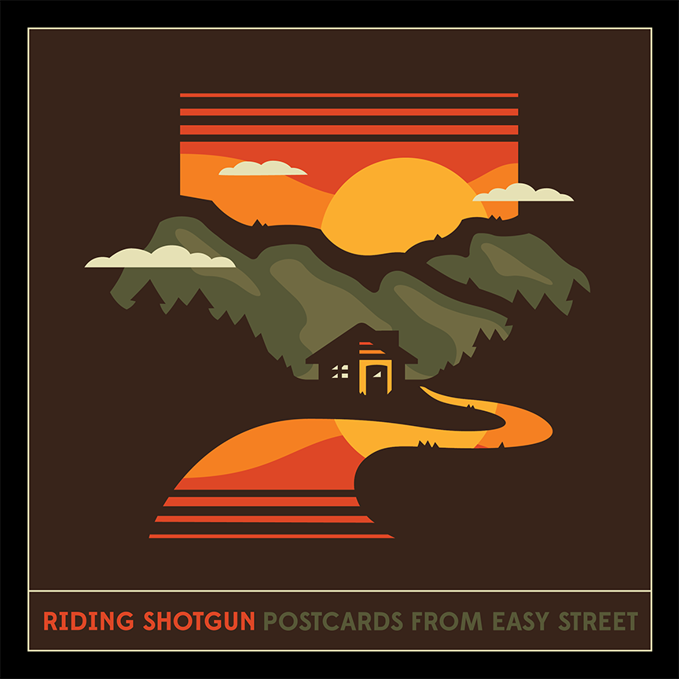
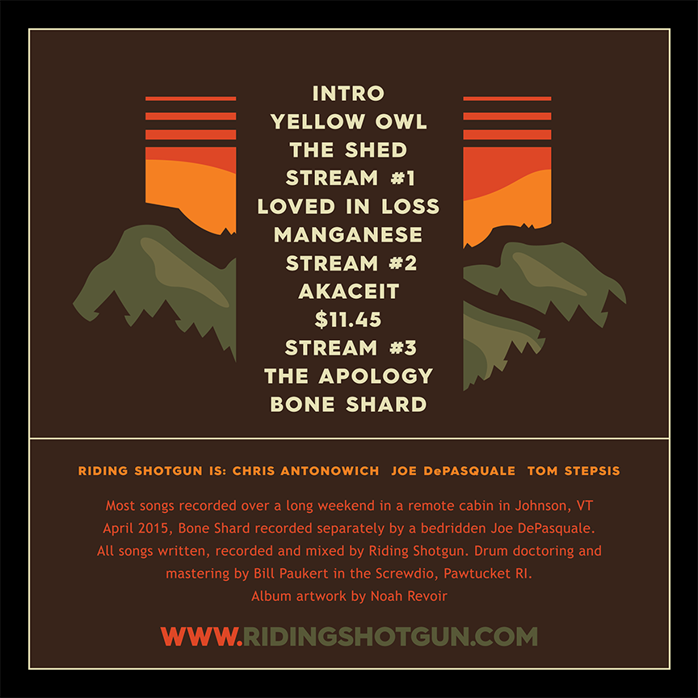

New album out now
 Riding Shotgun's sixth studio album "Postcards from Easy Street" sees the band returning to their instrumental rock roots with a heavy focus on capturing and expanding on their live sound. These 12 tracks, clocking in at just under the 40 minute mark, explore a vast sonic soundscape with the band injecting their signature rock and groove sound throughout. Stream it on Bandcamp, Spotify, or Apple Music now.